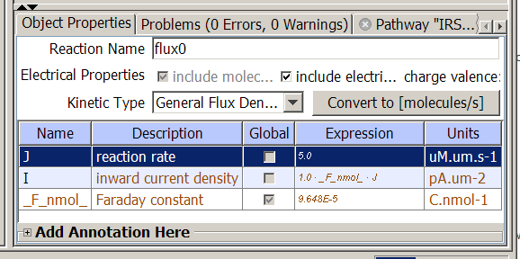

Membrane Fluxes are reactions that involved the movement of species or charge across a membrame. The membrane flux panel is used to display and edit properties of the membrane flux.

The top of the table contains a field for the Reaction (flux) Name and boxes to select the molecular and electrical properties, charge valence (i.e. the electric charge per molecule) and rate law for the electrical current and/or molecular flux. A button is available to convert the rate law either from flux and current ("molecules per second") to flux density and current density ("micromolar per second") or vice versa. Below is a table of the kinetic terms used to define the reaction rate J and the electric current density I that includes all mathematical terms referred to in the mathematical expression for J or other kinetic terms. Items in brown cannot be edited.
Edit the reaction name using the text field. A name already given to another reaction will be rejected.
Select flux type using the check boxes to select "include molecules" and/or "include electical in the flux reaction The charge valence combobox allows selecting a charge per molecule in elementary charges, an integer from minus five to five.
Select a rate law using the combobox to select one of a few predefined rate laws or to enter a user-defined or reaction rate or current law, which describes a flux or flux density (if include molecules is checked) or current or current density (if include electrical is checked) or both. Note that among J and I, one of them is either zero or refers to the other. Flux density and current density correspond to what would be micromolar per second in the case of reactions, while fluxes and currents correspond to molecules per second in the case of reactions.
Convert the rate law from micromolar per second to molecules per second, or vice versa, using the Convert to button. Note that predefined laws are only in flux or current densities (micromolar per second), so if they are converted to molecules (charge) per second, the user-defined kinetic law will automatically be selected, and remain so even if converted back.
Edit Expressions and their units in the Expression column.